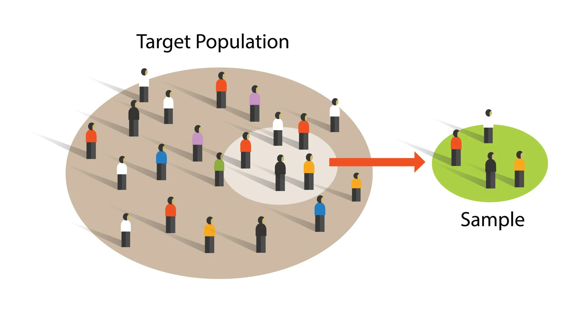
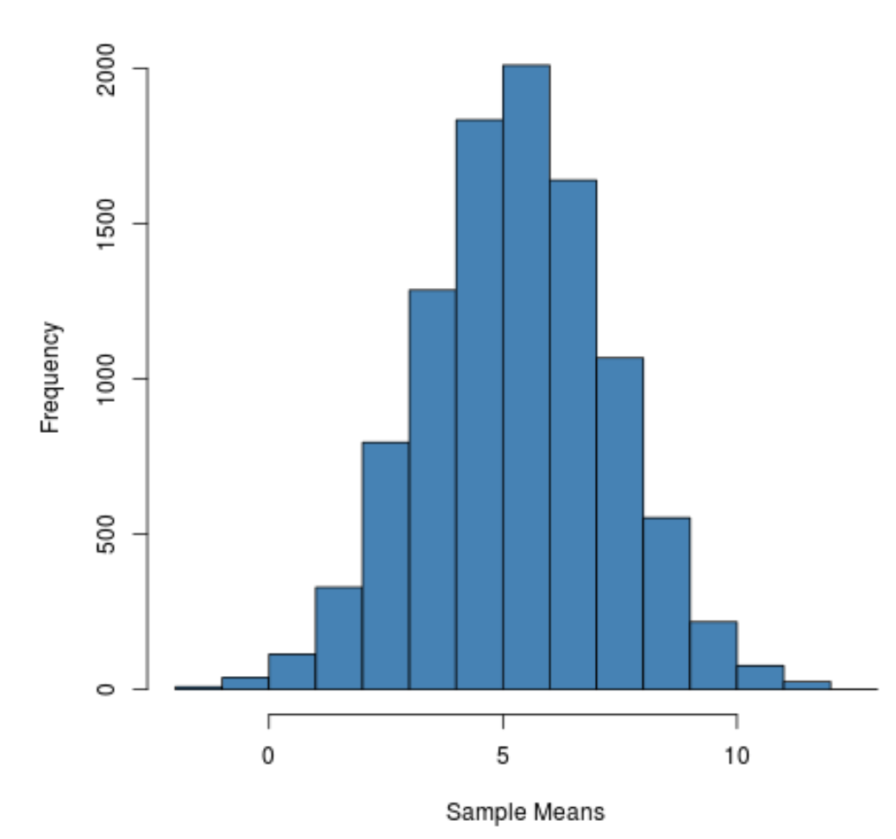
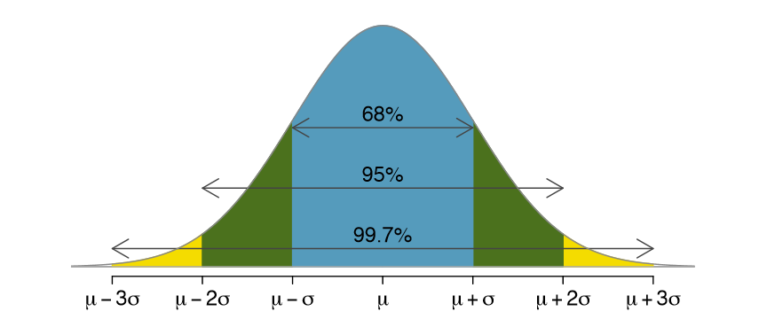
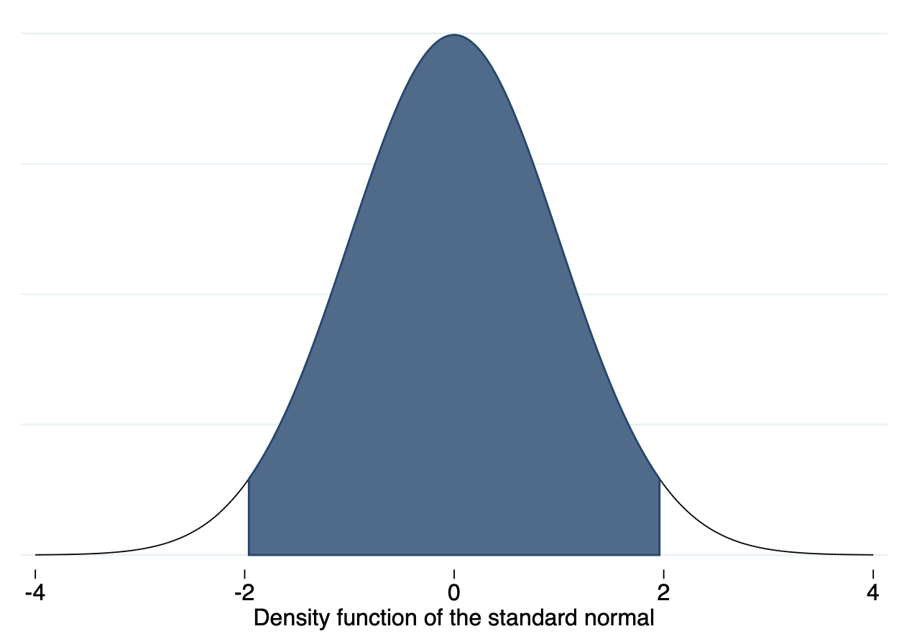

Last lesson, we covered random variables. Now, we will apply the idea of random variables to discuss how statisticians estimate true population values using samples.
This lesson covers the following topics:
- The idea of using samples to learn about the population.
- The idea of uncertainty in estimates and the basics of hypothesis testing.
1.2.1: Learning about Populations through Samples
As social scientists, we often want to learn about the world. Questions we could ask are:
- What is the average of something in some area? For example, what is the average salary of all people in the UK?
- What is the average effect of some feature on another? For example, how does an individual’s education on average effect their likelihood to turnout and vote in the USA?
In order to accurately answer these questions, we would have to gather data on every single individual unit within the population of interest.
- To find the average salary of all people in the UK, we would have to ask all 70 million people in the UK.
- To find the average effect of an individual’s education on their likelihood to turnout and vote, we would have to ask every single 18+ individual in the USA (over 280 million).
One thing that should immediately jump out to you is that - these populations are quite large. That means, it can be very costly, and even impossible, to ask everyone in the population.
- This is especially the case when it comes to topics such as causal inference, where the population is actually hypothetical potential outcomes (we will discuss this in the subsequent Applied Econometric Methods course).
So if we cannot actually ask everyone in the population, how do we find the true values of things in the population? The answer is sampling.
A sample is a subset of the population we are interested in studying. Ideally, a sample should be representative of the population, so that we can use the sample to draw conclusions on the entire population.
For example, if we wanted to find the average salary of all people in the UK, instead of asking 70 million people, if we could take a representative sample of 5,000 people, we might be able to use that small sample to say something about all 70 million people.

The sampling procedure is how we decide to sample. The best sampling procedure is random sampling - where every unit in the population as an equal chance of being selected.
Because every unit in the population is equally likely to be included in our sample, it is likely our sample will be very reflective of the population, making it easier to draw conclusions.
1.2.2: Estimands, Estimators, and Estimates
Let us formalise the idea of sampling and populations that we described above with three concepts: Estimands, Estimators, and Estimate.
An estimand is the true value in the population that we are trying to estimate. We typically notate the estimand as \theta.
For example, if we wanted to find the average salary of all people in the UK, the estimand would be the true average salary of all people in the UK.
For example if we wanted to find he average effect of an individual’s education on their likelihood to turnout and vote in the USA, the estimand would be the true average effect for all people in the USA.
Basically, an estimand is what we are trying to find.
However, as I said before, we often can’t find the true value in the population because it is too hard (or sometimes impossible) to ask everyone in the population. Thus, we cannot directly calculate the estimand \theta.
Because we cannot directly get the estimand \theta, we will instead have to estimate the true \theta with an estimator on the sample we have taken.
An estimator is a procedure for taking sample data to produce an estimate value of the true population relationship.
- For example, if we wanted to find the average salary of all people in the UK, the estimator could be be to find the sample average salary within our sample.
Once we have run the estimator, it will output an estimate, a prediction of the true value of \theta.
An estimate is the value produced by an estimator. It is our guess of what the true population parameter is. We typically notate an estimate as \hat\theta_n (the hat above means estimate).
1.2.3: Uncertainty in Estimates and Sampling Distributions
Let us go back to the example of finding the average salary of all people in the UK.
Let us say that we gather a sample of 1,000 individuals, and calculate the sample mean, getting our estimate \hat\theta_1.
Then, let us say we gather another sample of 1,000 individuals, and get another estimate \hat\theta_2.
- This estimate will not be the same as the first - as if we are randomly sampling (or any sampling process), the chance we get the same exact 1,000 individuals is unlikely.
- The slight changes in our sample will mean our estimate is slightly different for the new sample.
We keep taking samples, and keep getting more estimates \hat\theta_3, \hat\theta_4, ..., \hat\theta_n. Imagine we keep taking samples forever (infinitely).
Now, we have a ton of different estimates \hat\theta_1, \hat\theta_2, ..., \hat\theta_n. Let us plot these as if they are outcomes of a random variable.
- We put different \hat\theta estimates on the horizontal axis, and put the frequency in which they occur on the vertical axis.
We will get a distribution something like this:

This distribution is called a sampling distribution.
The sampling distribution is the imaginary distribution of estimates, if we repeated the sampling and estimation process many many times.
Just like any other distribution, this sampling distribution also has an expectation and variance.
- The expected value of this distribution is the true population estimate \theta, assuming that our estimator is unbiased (we will discuss this later).
- The variance of this distribution is how spread apart our estimates are.
Importantly, the standard deviation (square root of variance) of this distribution is called the standard error.
- The standard error essentially tells us how spread-out our estimates of our estimator are.
- This is very useful for quantifying the precision of our estimates, and will be used in numerous tests in this course.
1.2.4: Central Limit Theorem
We now know what a sampling distribution is - the distribution of estimates from different samples under repeated sampling.
However, why is this sampling distribution useful to us? The answer is the Central Limit Theorem.
The central limit theorem says that when you have a sufficiently large sample size (each sample generally above 30), the sampling distribution starts to approximate a normal distribution. This is even the case when the variable’s underlying distribution is not normal.
So cool, the sampling distribution mimics a normal distribution. Why is that important?
Recall from 1.1.6, we explained how the normal distribution has some very useful properties in terms of standard deviations.

Within 1 standard deviation on either side of the mean, 68% of the area under the distribution curve is included. Within 2 standard deviations on either side, 95%, and within 3 standard deviations, 99.7%.
We know the standard deviation of a sampling distribution is the standard error. What this tells us is that we know how likely it is to get a certain specific sample estimate.
If a specific sample estimate \hat\theta_n is at 1 standard deviation from the mean, that estimate or closer is likely to occur 68% of the time, and that estimate or farther is likely to occur 32% of the time.
If a specific sample estimate \hat\theta_n is at 2 standard deviations, that estimate or anything closer is likely to occur 95% of the time, and that estimate or farther is likely to occur 5% of the time.
Essentially, we can tell the likelihood of getting any \hat\theta_n estimate with the central limit theorem.
This will become very useful for several applications, including hypothesis testing covered in the next section.
1.2.5: Intuition of Hypothesis Testing
Let us say we have some status-quo theory.
- A status-quo theory is the generally accepted value of the true estimand \theta in your field.
- Often, the status-quo value is zero - for example, there is no relationship between income and education (0). This is generally the case for many research topics which have not been studies.
- However, the status-quo theory can be anything that is generally accepted as a value of \theta for your situation.
This status quo theory is called the null hypothesis, notated H_0.
However, you believe this status-quo theory is wrong, and want to find some way to disprove it. You have an alternative hypothesis H_1, which you believe to be correct.
How do we prove the null hypothesis is wrong and our alternative hypothesis is correct?
We cannot actually know what probability that the status-quo theory is wrong, or what probability that our theory is right.
However, what we can calculate (as seen in the previous section), is the probability of getting a certain sample estimate \hat\theta_n, assuming the status-quo theory is true.
If we assume the status-quo theory is true (as we typically do, until we prove it false), that means that the hypothetical sampling distribution would be centered at the null hypothesis value H_0.
- Then, we can gather a sample, and calculate some sample estimate \hat\theta.
- Using the central limit theorem, we can calculate the probability of getting our sample estimate \hat\theta, given the null hypothesis H_0 was true.
If the probability of getting our sample estimate \hat\theta is very very low given the null hypothesis was true, we conclude this as convincing evidence that the null hypothesis is actually false.
- After all, if you only have a tiny tiny chance of getting the specific \hat\theta value you did, that likely doesn’t mean you got super lucky, it just means that the null hypothesis is not true, and that the true value of H_0 is something different that would mean your actual \hat\theta is not that unlikely.
In social sciences, we generally accept 95% confidence as the standard level. That means that if we get an estimate \hat\theta that has less than a 5% chance of occurring given the null hypothesis is true, that means we can reject the null hypothesis.
For example, look at the figure below. This is the sampling distribution, assuming the null hypothesis H_0 is true. Thus, it is centered at H_0 (in this case, the 0).

The blue shaded areas are within 2 standard deviations of the mean at H_0, and are thus within the 95% likelihood to occur range.
- Anything beyond the blue shading (white areas) are values that are less than 5% likely to occur.
- If we get a \hat\theta in the white areas, that means there is less than a 5% chance the null hypothesis is true. In that case, we reject the null hypothesis and accept our alternative hypothesis.
We will illustrate how to conduct a hypothesis test in the next section.
1.2.6: Implementing a Hypothesis Test
To start a hypothesis test, you will need a status-quo null hypothesis, and a alternative hypothesis.
Now, let us gather a sample, and estimate a sample estimate \hat\theta. We will need to calculate a test statistic for our sample estimate \hat\theta.
\text{Test Statistic} = \frac{\hat\theta - H_0}{\text{Standard Error of } \hat\theta}
The test statistic gives us the distance of our estimate \hat\theta from the true \theta, assuming the null hypothesis H_0 is true.
Now we know how many standard errors away from the null hypothesis our sample estimate is, we can consult a standard normal distribution.

On this distribution, find, on the x-axis, our test statistic value, and its absolute value.
- That should give us two points on either side of the mean of the sampling distribution.
Now, start from those two points, and highlight the area under the curve further away from the mean from both points. It should look something like this (in this figure, the test statistic is 2.228):

Now, calculate the highlighted area under the curve. That is our p-value.
The p-value is the probability of getting a test statistic equally or more extreme than the one we got with our sample estimate, given the null hypothesis is true.
- If the p-value is low, that means there is a low probability that the null hypothesis is true.
Typically, in the social sciences, if the p-value is below 0.05 (5%), we can reject the null hypothesis and claim that it is not true. Then, we accept our alternative hypothesis.
Hypothesis testing is a huge part of the social sciences (and science in general). After all, our goal in science is to prove old things wrong and show new theories are correct. Hypothesis testing is the primary way we do this in quantitative social science research.
1.2.7: Confidence Intervals
Sometimes, we aren’t just interested in proving a new theory with hypothesis testing. We are often interested in the actual parameter value of \theta.
As we have discussed before, there is some variation in our estimates \hat\theta_n. How can we come up with a range that likely includes the true value of \theta?
The answer is confidence intervals!
According to the Central Limit Theorem, we know that any sample estimate \hat\theta_n is 95% likely to be within 2 standard deviations/errors of the true population value \theta.
Thus, we can construct an interval of 2 standard errors on both sides of our estimate \hat\theta_n, which means that 95% of the time, our estimate + interval will include the true value of \theta. Thus our interval is:
\hat\theta - 1.96 se(\hat\theta), \ \ \hat\theta + 1.96se(\hat\theta)
- Why 1.96? Well actually we have been rounding by saying 2 standard deviations. The normal distribution actually contains 95% of the area under the distribution within 1.96 standard deviations on either side.
What does this confidence interval mean?
- It means under repeated sampling and estimating \hat\theta_n, 95% of the confidence intervals we construct will include the true \theta value.
It is very important to note that confidence intervals do not mean a 95% probability that the true \theta is within any specific confidence interval we calculated.
We cannot know based on one confidence interval, whether it covers or does not cover the true \theta.
The correct interpretation is that over many samples from the same population, we would expect 95% of our confidence intervals to contain the true \theta value.